Maintaining the web is important, and I have been documenting the Web APIs on MDN so future
developers are at ease at understanding concepts like DOMRect, DOMQuad, or the SVG API to name a
few. Creating new properties is important, and I have been making csswg drafts on W3C such as
the motion blur, progressive blur and directional blurs under CSS Filter API. Lastly, making
sure vendors are implementing those APIs is very important, that's why I lead impact based
approach, create good examples with stunning UX that solve real use cases and are radical, with
proper code documentation.
I recently worked on a use case for the contact Picker API is a time saver and helps in real
industry use cases, for us being able
to seamlessly send emails to multiple contacts at once to deliver orders at their addresses as
opposed to filling forms multiple times that gets tedious even with autofill. Furthermore the
user generally doesn't have address and names of others saved in their autofill so having a
Contact drawer to directly make all this happen is a game changer. For us retailers not on our
Stone Management system have been proven to get onboarded 70% faster by this API which has
potential to help million dollar businesses by reducing times.


 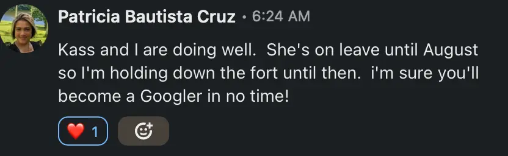
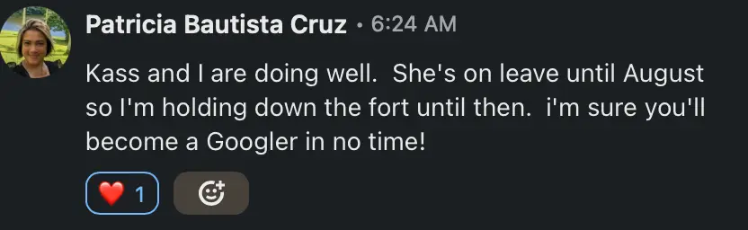


 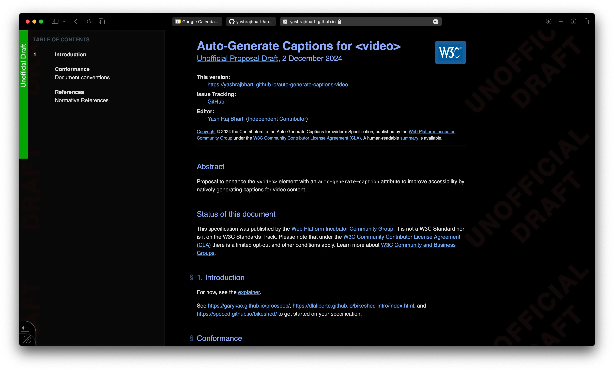
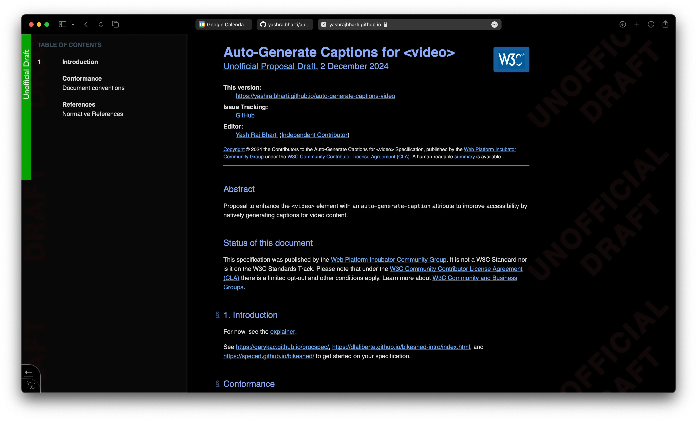


 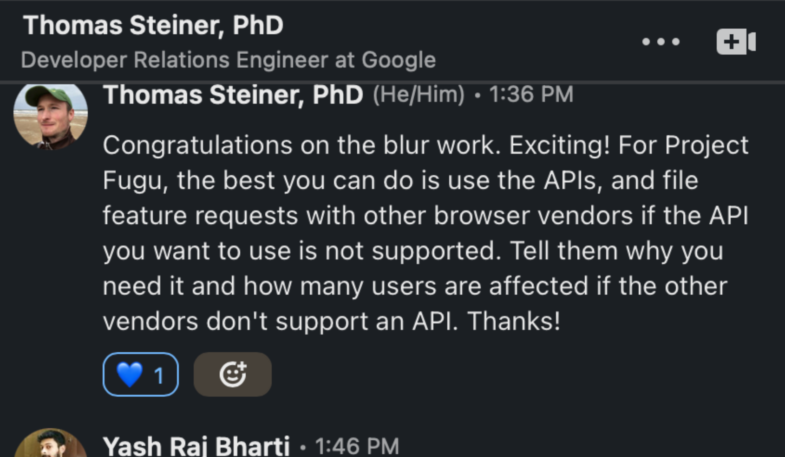
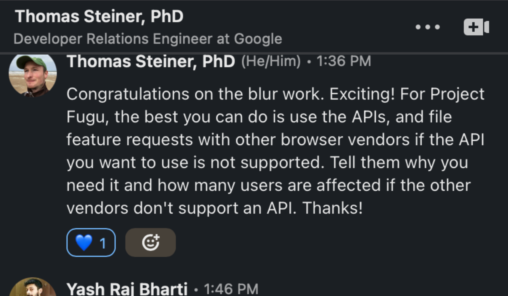


 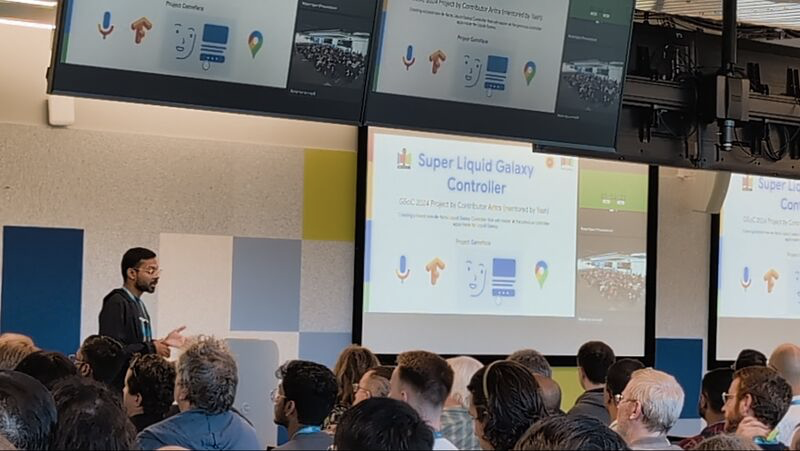
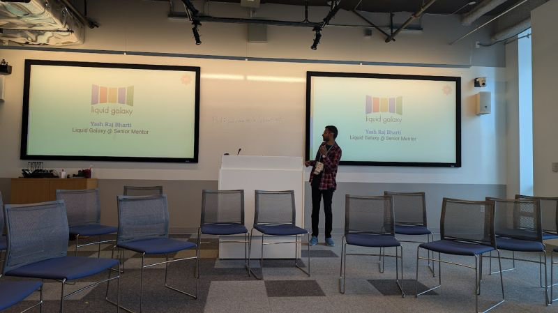
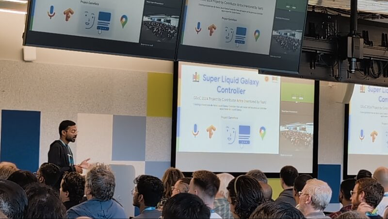
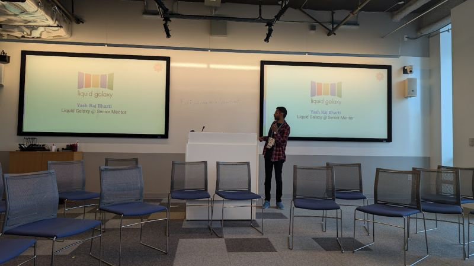
 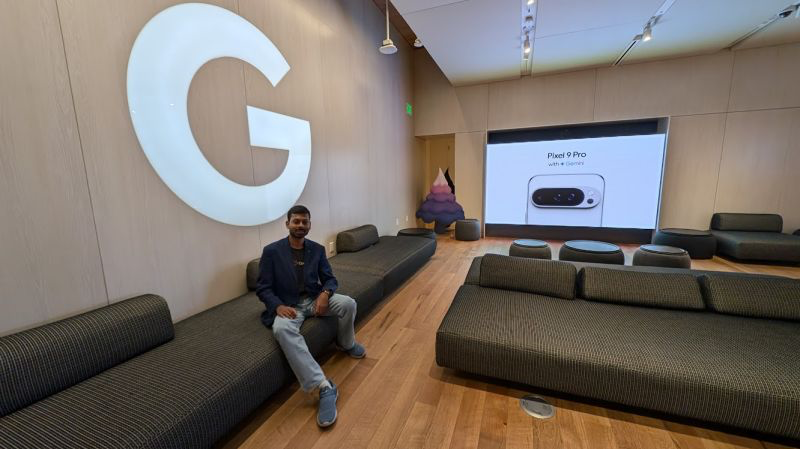
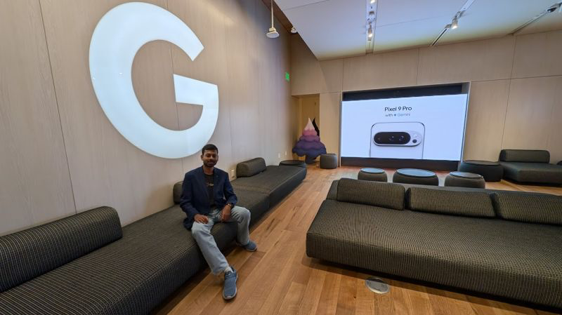

 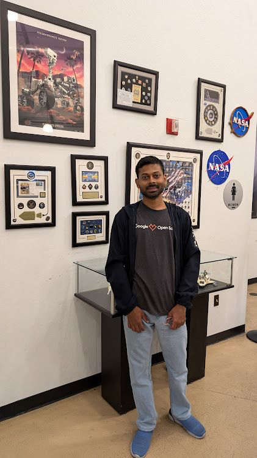
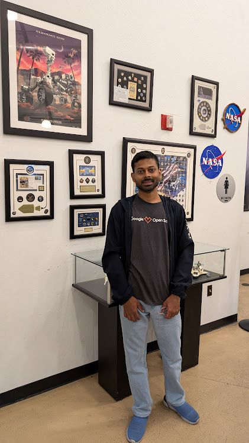